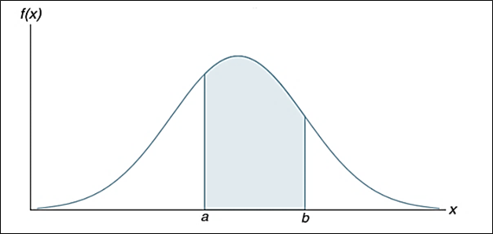

5 Continuous random variable
A fundamental difference separates discrete and continuous random variables in terms of how probabilities are computed. For a discrete random variable, the PMF \(f(x)\) provides the probability that the random variable assumes a particular value.
With continuous random variables, the counterpart of the probability function is the probability density function (PDF), also denoted by \(f(x)\). The difference is that the probability density function does not directly provide probabilities. However, the area under the graph of \(f(x)\) corresponding to a given interval does provide the probability that the continuous random variable x assumes a value in that interval.
So when we compute probabilities for continuous random variables we are computing the probability that the random variable assumes any value in an interval.
Definition
The function \(f(x)\) is said to be probability density function (PDF) for the continuous random variable \(X\), defined over the set of real numbers, if
- \(f(x)\ge0; all\ \ x\in R\)
- \(\int_{-\infty}^{+\infty} f(x)dx=1\)
- \(P(a< X < b)=\int_{a}^{b} f(x)dx\)

N.B: \(P(X=a)=0\) as well as \(P(X=b)=0\). So, \(P(X\le a )\) is same as \(P(X<a)\).
CDF of \(X\): By definition, CDF, \(F(x)=P(X\le x)= \int_{-\infty}^{x} f(x)dx\)
Therefore, \(f(x)=\frac{d}{dx} F(x)\).
Expectation and variance of continuous r.v
- Mean: \(E(X)=\int x.f(x)dx\)
- Variance: \(\sigma^2=E(X-\mu)^2=\int(x-\mu)^2 f(x)=\int x^2 f(x)dx-\mu^2\)
Example 3.11(Walpole et al. 2017) Suppose that the error in the reaction temperature, in \(^0C\), for a controlled laboratory experiment is a continuous random variable X having the probability density function
\[ f(x)=\frac{x^2}{3}; -1<x<2. \]
- Verify that \(f(x)\) is a density function.
- Find \(P(0< X \le 1)\).
Example 3.12(Walpole et al. 2017) Find \(F(x)\), and use it to evaluate \(P(0 < X\le1)\).
H.W: Find E(X) and Var(X) where,\(f(x)=\frac{x^2}{3}; -1<x<2\).
Exercise 3.29(Walpole et al. 2017) An important factor in solid missile fuel is the particle size distribution. Significant problems occur if the particle sizes are too large. From production data in the past, it has been determined that the particle size (in micrometers) distribution is characterized by
\[ f(x)=3x^{-4}; x> 1 \]
- Verify that this is a valid density function.
- Evaluate \(F(x)\).
- What is the probability that a random particle from the manufactured fuel exceeds 4 micrometers?
Exercise 3.69(Walpole et al. 2017) The life span in hours of an electrical component is a random variable with cumulative distribution function \[ F(x)=1-e^{-\frac{x}{50}}; x>0 \]
Determine its probability density function (PDF).
Determine the probability that the life span of such a component will exceed 70 hours.